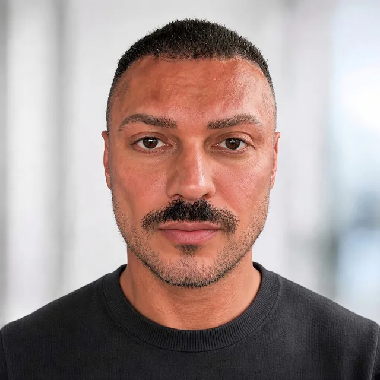

Independent Creative Studio · Strategy · Creation · Development
Vom ersten Gedanken. Zum fertigen Ergebnis.
Wir machen Ideen sichtbar und auffindbar: mit Werbeclips, Logo Design, Print, Merch und SEO. Und erlebbar als Websites, Apps, Games, Dashboards und Abläufe, die von selbst laufen.
Viele Signale. Eine klare Bewegung.
Technologie ist kein Selbstzweck. Wir setzen sie ein, damit Ideen besser funktionieren.
01Design
Websites, die eine Marke unverwechselbar machen.
Strategie, Design, Motion und Entwicklung greifen ineinander. Außergewöhnlich, klar bedienbar und technisch sauber.
Websites im DetailGefunden werden, wenn es zählt: Audit, On-page SEO, Content und lokale Suche.
SEO im Detail ›
02Connect
Anfragen beantwortet, bevor jemand nachfragt.
Wir verbinden Informationen, Systeme und Freigaben. Routine wird vorbereitet oder automatisiert – wichtige Entscheidungen bleiben beim Menschen.
- Ausgang
- Zu viele manuelle Schritte
- System
- Chatbots, Regeln, Integrationen
- Ergebnis
- Weniger Aufwand, mehr Überblick

03Develop
App Design, das sich sofort richtig anfühlt.
Von Nutzerführung und Interface Design bis zum klickbaren Prototyp und zur Entwicklung – für mobile Apps, Kundenportale und interne Tools.
App Design entdeckenWelten, die man nicht nur anschaut: Browser, Mobile, Lernspiele und Markenerlebnisse.
Game Design im Detail ›
04Create
Werbeclips, die stoppen. Und verkaufen.
Werbefilme, Motion Design Videos, Social Ads, Fashion-Filme und Static Ads für Mode, Marken und Produkte – von Idee und Bildsprache bis Schnitt, Sound und jedem Format.
- Ausgang
- Eine Idee oder ein Produkt
- System
- Konzept, Generierung, Regie
- Ergebnis
- Creatives für jeden Kanal und jedes Format

05Envision
Sehen, was möglich ist. Bevor es entsteht.
Gärten, Landschaften, Innenräume und Gebäude: Wir übersetzen eure Idee in greifbare Entwürfe – Gestaltung, Atmosphäre und Material vor der Umsetzung abstimmen.
- Ausgang
- Fotos, Skizzen oder ein Raumkonzept
- System
- Entwurfsrichtungen, Licht und Material
- Ergebnis
- Visualisierungen für Entscheidungen

06Craft
Eine Handschrift. Auf jeder Oberfläche.
Print Designs für Textilien, Objekte und Folien – von einzelnen Motiven über Kollektionen bis zur durchgängigen Gestaltung.
Print Design entdecken
07Brand
Ein Zeichen, das man nicht mehr vergisst.
Logo, Farben, Schrift und Bildsprache als ein klares System – damit eure Marke auf Website, Print, Merch und Social Media gleich stark wirkt.
Logo Design im Detail08Produce
Merch, den man gerne trägt.
T-Shirts, Hoodies, Sweats, Denim und Strick – gestaltet und produziert aus einer Hand, mit starken Produktionen und sauberer Qualität.
- Ausgang
- Eine Marke, ein Team oder ein Event
- System
- Design, Muster, Produktion
- Ergebnis
- Fertige Ware, die eure Marke trägt

09Manage
Alles im Blick. Ohne Tabellenchaos.
Warenwirtschaft, Personalwirtschaft und interaktive Dashboards – mit euren Tools verbunden oder passend neu gebaut.
Systeme im Detail
Richtpreise
Was kostet das? Ein ehrlicher erster Rahmen.
Jedes Projekt ist anders. Diese Richtpreise geben euch eine erste Orientierung, das genaue Angebot stimmen wir nach dem Erstgespräch ab. Kleine Änderungs- und Wartungsaufträge: 100 € je Auftrag.
Landingpage bis Markenauftritt mit Motion und SEO-Basis
02Automatisierung & Chatbotsab X.XXX €Ein automatisierter Ablauf, eine Telefonannahme oder ein Chatbot, eingerichtet und getestet
02Systeme & Dashboardsab X.XXX €Warenwirtschaft, Personal oder ein interaktives Dashboard
03App & Game Designab X.XXX €Klickbarer Prototyp bis fertige App oder Browser-Game
04Werbeclipsab X.XXX €Ein Werbefilm oder ein Set Social Ads in allen Formaten
05Räume & Visualisierungab X.XXX €Entwurfsrichtungen und Visualisierungen für einen Raum
06Logo Designab X.XXX €Logo, Farben, Schrift und Regeln als kleines CI-Paket
06Print & Merchab X.XXX €Print Design je Motiv, Merch-Produktion je Stückzahl
Alle Preise netto zzgl. MwSt. Anbieter-, Hosting- und Produktionskosten weisen wir separat aus.
Potenzialfinder
Wo verliert ihr gerade am meisten Potenzial?
Wählt einen Engpass. Wir zeigen einen möglichen ersten Lösungsweg – kurz, konkret und visuell. Der Schwarm zeigt euch, worum es geht.
Unsere Haltung
Technologie beschleunigt. Menschen entscheiden.
Wir nutzen die besten Werkzeuge. Den Unterschied machen Idee, Umsetzung und Verantwortung.
Ihr müsst kein Fachvokabular lernen. Wir erklären die Lösung über Nutzen und Grenzen.
Freigaben, Quellen und wichtige Entscheidungen verschwinden nicht in einer Blackbox.
Wir wählen Werkzeuge passend zur Aufgabe – nicht die Aufgabe passend zum Hype.
Zum Schluss
Haben wir euer Interesse geweckt?
Der erste Schritt
Wer zu viel für sein Unternehmen arbeitet, hat keine Zeit, an seinem Unternehmen zu arbeiten.
Das Team
Zwei Köpfe. Ein Ergebnis.
Ihr sprecht direkt mit uns, vom ersten Gespräch bis zum fertigen Ergebnis.
Unser Versprechen
Ihr sprecht direkt mit denen, die umsetzen. Vom ersten Gespräch bis zum fertigen Ergebnis.

Eugen Kelberer
CEO
Ich sorge dafür, dass aus eurer Idee ein Ergebnis wird, das wirkt.
Paul Haase
CEO
Persönlicher Satz folgt.